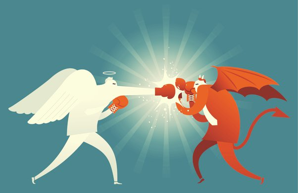

What is good and evil?
October 6, 2022 by Julian Piper Multum disputandum est utrum tale sit necne bonum et malum. Quidam putant esse, et quod quisque habeat potentiam utriusque. Alii putant bonum et malum simpliciter construere a societate creata ad ordinem conservandum. Responsio definitiva non est, sed quaestio interesting considerare est. Quid nos boni facit? Ad istam quaestionem nemo est qui respondeat.
Unusquisque suam definitionem habet id quod significat bonum esse. Sed quaedam conditiones communes, quae aliquem bonam personam facere possunt, ut honestus, benignus, utilis, et consideratus. Suae quisque potentiae est ut bonus homo sit si velint esse. Nulla quaestio definitiva responsio est, sicut id quod nos malos facit esse subiectivum. Sed quaedam explicationes possibiles sunt defectus verae vel misericordiae, propensio violentiae vel crudelitatis; Accedit ad mala inclinationes aliqui nasci; quaedam vero ut eas per tempus excolere possint propter corruptionem influentiae corruptelae.